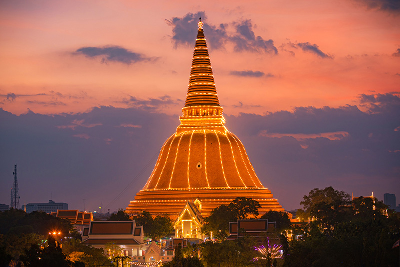

เว็บของฉัน
อาหารทีหารที่ชอบ
 ผัดกะเพราหมูกรอบ
ผัดกะเพราหมูกรอบ
ส่วนผสม
ข้าวสวย 1 ถ้วย
หมูกรอบหั่นชิ้น ตามชอบ
กระเทียมไทย 10 กลีบ
พริกแดงจินดา 4 เม็ด
พริกชี้ฟ้าสีแดงหั่นเฉียง 1 เม็ด
ซอสปรุงรส 2 ช้อนโต๊ะ
ซีอิ๊วดำ 1 ช้อนโต๊ะ
น้ำปลา 2 ช้อนโต๊ะ
น้ำตาลทราย 2 ช้อนโต๊ะ
น้ำเปล่า 2 ช้อนโต๊ะ
วิธีทำ
เตรียมครกและสาก หั่นกระเทียมไทย และ พริกแดงจินดา ใส่ลงไป แล้วตำให้แหลก
ตั้งกระทะ ใส่น้ำมัน นำกระเทียมและพริกไทยใส่ลงไปแล้วผัดให้มีกลิ่นหอม
ใส่หมูกรอบ แล้วปรุงรสด้วย ซอสปรุงรส ซีอิ๊วดำ น้ำปลา น้ำตาลทราย น้ำเปล่า ผัดให้ส่วนผสมเข้ากัน
ใส่ใบกะเพรา ตามด้วย พริกชี้ฟ้าหั่นเฉียงลงไป ผัดคลุกเคล้าให้เข้ากัน
ตักเสิร์ฟใส่จาน เป็นอันเสร็จ
สถานที่ท่องเที่ยวที่ชอบ

พระปฐมเจดีย์ หรือเดิมเรียกว่า พระธมเจดีย์ มีฐานะเป็นมหาธาตุหลวง
ทั้งนี้พระบาทสมเด็จพระจอมเกล้าเจ้าอยู่หัวมีพระราชวินิจฉัยว่า พระธมเจดีย์องค์นี้อาจเป็นเจดีย์ที่สร้างขึ้นเมื่อคราวที่พระสมณทูตในพระเจ้าอโศกมหาราชเดินทางมาเผยแผ่ศาสนายังสุวรรณภูมิก็เป็นได้
เพราะเจดีย์เดิมมีลักษณะทรงโอคว่ำหรือทรงมะนาวผ่าซีกแบบเดียวกับพระสถูปสาญจี แต่ปรากฏว่ามียอดเป็นแบบปรางค์
ซึ่งพระองค์ฯ มีพระราชวินิจฉัยว่า อาจมีเจ้านายพระองค์ใดมาบูรณะไว้ก็เป็นได้ ซึ่งตรงกับความใน ศิลาจารึกหลักที่ 2 (ศิลาจารึกวัดศรีชุม) ของพระมหาเถรศรีศรัทธา
อันได้กล่าวไว้ว่า พระมหาเถรศรีศรัทธาฯ ท่านทรงได้แวะมาบูรณะพระธมเจดีย์องค์นี้ ก่อนที่ท่านจะเดินทางกลับเมืองราด เมื่อคราวที่ท่านเสด็จกลับจากศึกษาศาสนาพุทธในประเทศศรีลังกา
ทั้งนี้พระบาทสมเด็จพระจอมเกล้าเจ้าอยู่หัวจึงพระราชทานนามใหม่ว่า
ลองคลิกดูงับบบ
บุคคลที่ชอบ
god
พระเจ้า หรือ พระเป็นเจ้า (อังกฤษ: God)
หมายถึง เทวดาผู้เป็นใหญ่ ถือเป็นเทพเจ้าเพียงพระองค์เดียวตามความเชื่อแบบเอกเทวนิยม
หรือเป็นเทวดาผู้เป็นสารัตถะเดียวของเอกภพตามความเชื่อแบบพหุเทวนิยม พระเป็นเจ้าถือว่าเป็นผู้อยู่เหนือธรรมชาติ พระผู้สร้างและปกครองเอกภพ นักเทววิทยาได้อธิบายคุณลักษณะของพระเป็นเจ้าไว้ต่าง ๆ
กันตามแต่มโนทัศน์เกี่ยวกับพระเป็นเจ้าของบุคคลนั้น โดยทั่วไปถือว่าพระเป็นเจ้าทรงเป็นสัพพัญญู ผู้รอบรู้ทุกสิ่งในจักรวาล ทรงอำนาจไร้ขีดจำกัด ทรงสถิตอยู่ทุกหนแห่ง ทรงพระเมตตา
เป็นภาวะเชิงเดียวที่ไม่แบ่งแยก ทรงสถิตอยู่ชั่วนิรันดร์ และเอกภพไม่อาจอยู่ได้โดยปราศจากพระองค์
กดเพื่อดูพระเจ้า
จัดทำโดย
นาย ธนากร ตรีศิริ
664485019
66/96